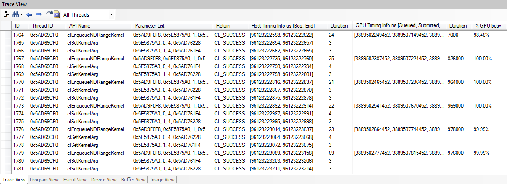

The OpenCL APIcall trace captured by profiler will be displayed plus some translation (return value, global work size, local work size, etc)

Basic usage:
• Capture an OpenCL application from the connected application. After capture completes, the tree will populate.
• CPU time will be displayed and if current API triggers GPU execution, GPU time will be displayed as well (clEnqueneRead/WriteBuffer, clEnqueueNDRangeKernel, etc).
• Scrubber Metrics will be displayed if metrics is dragged to
time line Gantt View area after device connection and prior to
record/capture.